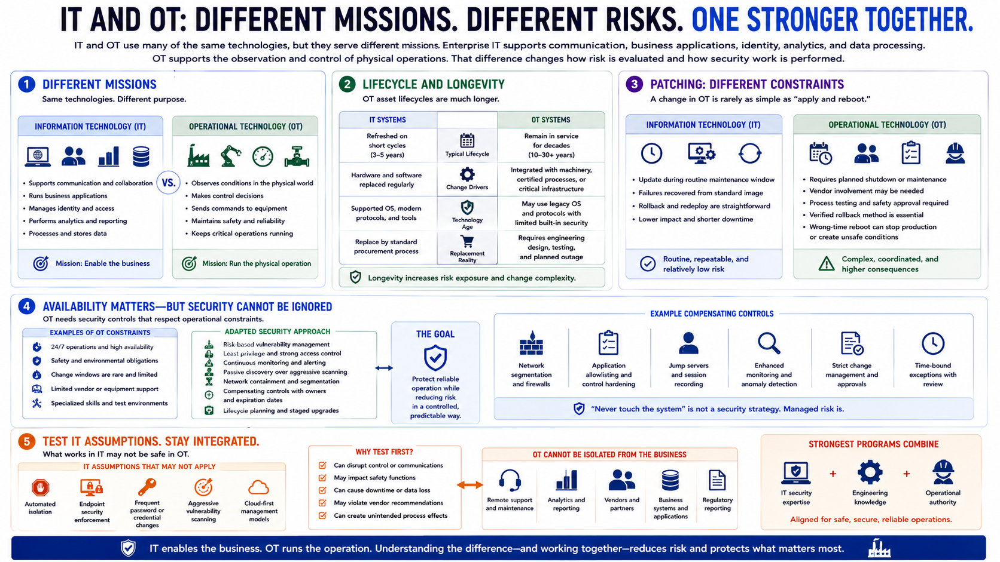

OT vs IT
Connecting to LMS... Progress: in progress

Narration
IT and OT use many of the same technologies, but they serve different missions. Enterprise IT supports communication, business applications, identity, analytics, and data processing. OT supports the observation and control of physical operations. That difference changes how risk is evaluated and how security work is performed.
IT systems are often refreshed on relatively short cycles. OT equipment may remain in service for decades because it is integrated with expensive machinery, certified processes, or infrastructure that cannot be replaced casually. Older controllers and workstations may use unsupported operating systems or protocols with little built-in security. Replacement may require engineering redesign, procurement, testing, and an outage.
Patching also carries different constraints. An IT team may deploy updates during a routine maintenance window and recover a failed endpoint from a standard image. In OT, a change may require a planned shutdown, vendor participation, process testing, safety approval, and a verified rollback method. A controller reboot at the wrong time can interrupt production or leave equipment in an undesirable state.
Availability requirements can be strict, but “never touch the system” is not a security strategy. OT teams still need vulnerability management, access control, monitoring, and lifecycle planning. The controls must be adapted to the process. Passive discovery may be preferable to aggressive scanning. Network containment may reduce risk while a patch awaits testing. Compensating controls need owners, evidence, and expiration criteria.
IT assumptions should therefore be tested before they are applied to OT. Automated isolation, endpoint enforcement, or credential changes can have unexpected operational effects. At the same time, OT cannot remain disconnected from enterprise governance. Modern operations depend on remote support, analytics, vendors, and business systems. The strongest programs combine IT security expertise with engineering knowledge and operational authority.